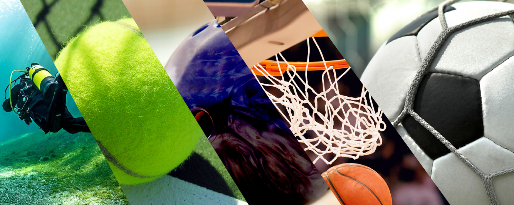

La Maison des Ligues de Lorraine est un espace dédié au développement du sport dans la région. Elle regroupe différentes ligues sportives, offrant des services de soutien, de formation et d’accompagnement pour les fédérations et les clubs locaux. Elle permet également d’organiser des événements sportifs, de promouvoir le sport amateur et de renforcer les liens entre les acteurs du milieu sportif. C’est un lieu clé pour la gestion, la coordination et la promotion du sport en Lorraine.

Le sport sert à plusieurs objectifs : il améliore la condition physique, renforce la cohésion sociale, développe des compétences de travail d'équipe et de leadership, tout en apportant des bienfaits mentaux, comme la gestion du stress et l’amélioration de la confiance en soi. C’est aussi un moyen de se divertir et de se maintenir en bonne santé.